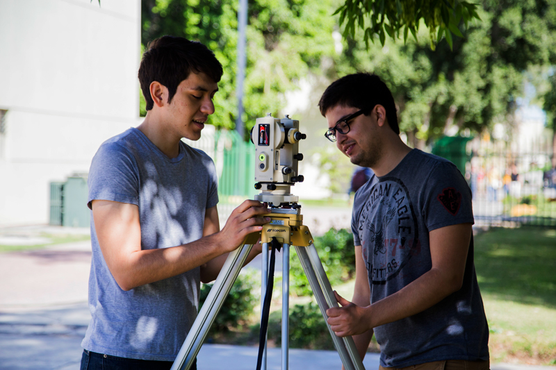

The graduate of the Civil Engineering educational program at UABC is a professional with a multidisciplinary approach oriented by knowledge of mathematics, physics and chemistry, committed to lifelong learning, specialized in planning, management, design, modeling, construction, administration, operation and conservation of infrastructure projects and services, to provide solutions to problems, development and deployment of technologies that fulfill specific needs and contribute to the care of the environment, sustainable, economic and social development in the national and international context, with oral and written communication skills, creativity and innovation, initiative, leadership, responsibility and proactive attitude in all areas of their professional practice.
